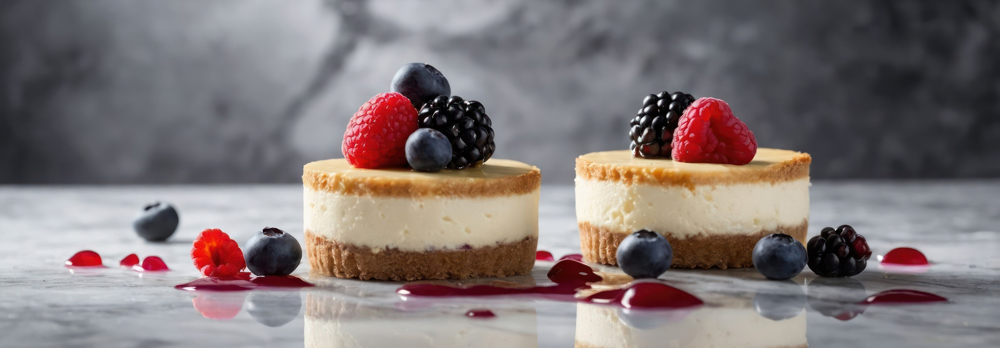
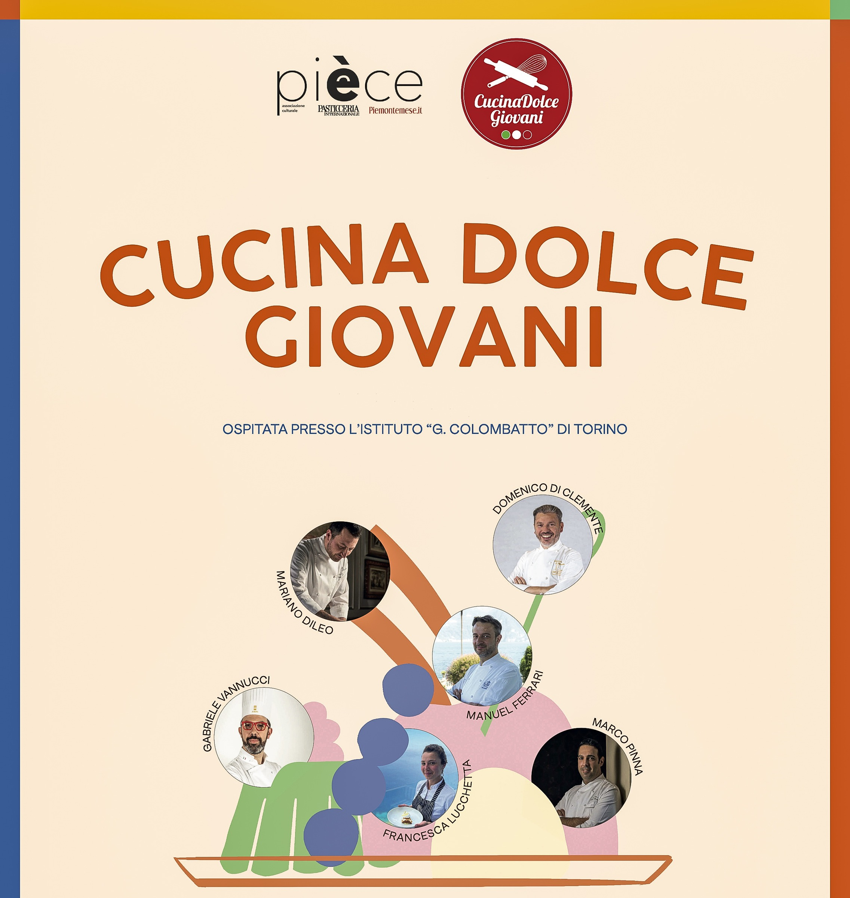
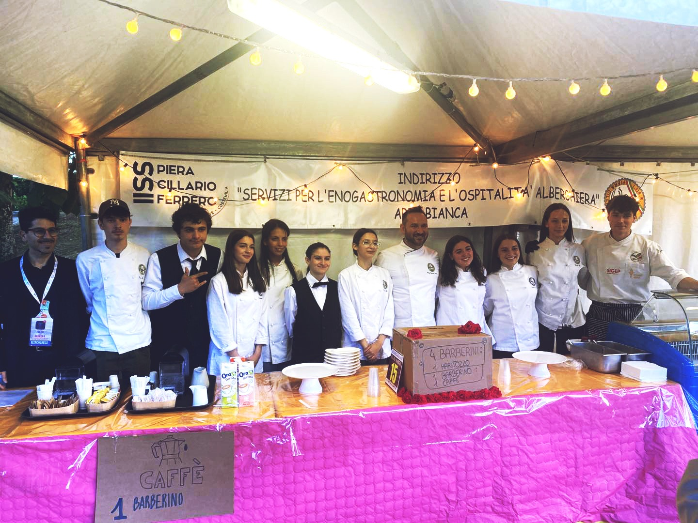
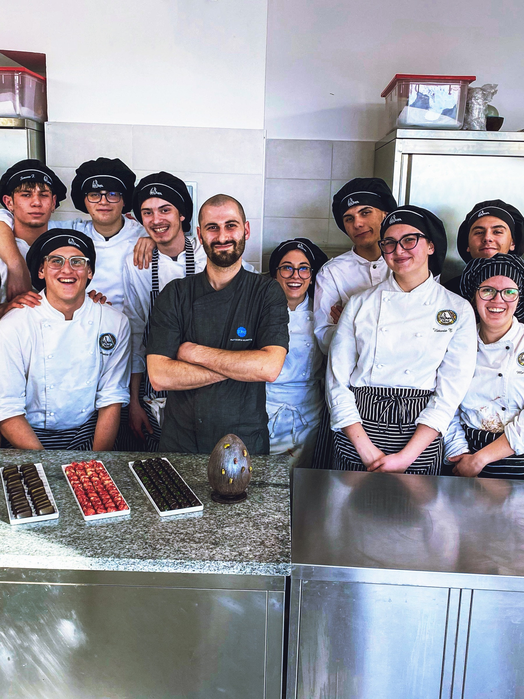
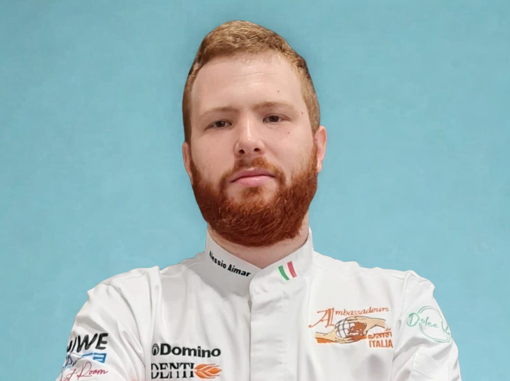
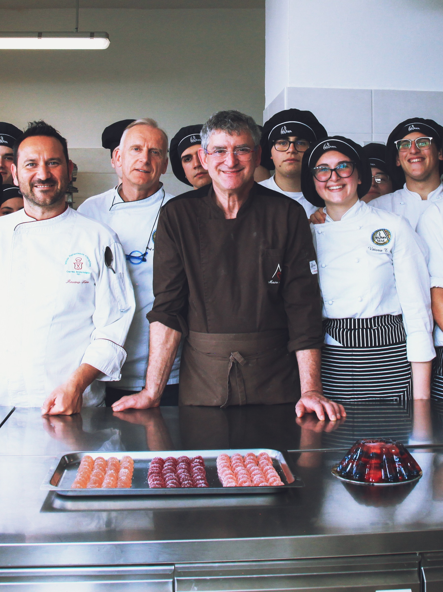

- I nostri fiori all’occhiello -

I nostri studenti mettono in pratica la professionalità acquisita in laboratorio curando buffet e accoglienza, e partecipando con le loro competenze a eventi sportivi, culturali e sociali, uscite, settimane bianche, teatro, certificazioni, visite aziendali e concorsi.
Albaromatica è la rassegna che anima il centro storico di Alba con i profumi di erbe e spezie durante la Fiera del Tartufo. Gli studenti partecipano preparando prodotti da forno aromatizzati, portando la creatività dell’Arte Bianca nel cuore della manifestazione.
La cerimonia che apre ufficialmente la stagione della distillazione presso la storica Distilleria Levi di Neive. Un rito suggestivo che celebra le radici del territorio e la continuità delle tradizioni, trasformando l’avvio della produzione in un momento di incontro, cultura e comunità. Gli studenti dell’Arte Bianca partecipano attivamente, portando il loro entusiasmo e la loro professionalità in un contesto che unisce memoria, lavoro artigianale e spirito di festa.
Un progetto nazionale dedicato alla pasticceria da ristorazione, promosso da Associazione Pièce. L’iniziativa offre agli studenti un’esperienza intensiva di laboratori e dimostrazioni, valorizzando tecnica e creatività nella realizzazione di dessert al piatto e servizi completi di pasticceria. Un’occasione unica di confronto, crescita e formazione professionale.

Il progetto si svolge all’interno del bar didattico della scuola e rappresenta un laboratorio inclusivo che permette agli studenti di sviluppare competenze professionali nella gestione del servizio di caffetteria.
L’attività potenzia abilità tecniche e relazionali, promuove autonomia e spirito di collaborazione e prepara concretamente all’inserimento nel mondo del lavoro.
CioccolaTò è la grande kermesse torinese dedicata al cioccolato, che ogni anno richiama maestri, aziende e appassionati da tutta Italia. In collaborazione con l’Associazione Pièce, gli studenti dell’Arte Bianca partecipano portando le proprie creazioni e mettendo in campo competenze e passione in uno degli eventi più prestigiosi del settore.
A Castagnole delle Lanze, la Festa della Barbera è un appuntamento che unisce tradizione, vino e pasticceria. Per tre giorni gli studenti dell’Arte Bianca si alternano con entusiasmo, proponendo creazioni dolci che raccontano la qualità della formazione e la creatività delle nuove generazioni. Un evento che celebra le eccellenze locali e che ogni anno conquista il pubblico con passione e professionalità.

Corse campestri e gare di atletica
A settembre, nell’ambito del progetto accoglienza, le classi prime partecipano a una giornata di trekking tra i sentieri di Neive, occasione per ammirare i paesaggi e socializzare con i nuovi compagni.
Momenti formativi d’eccellenza con maestri pasticceri, panificatori e cioccolatieri di fama. Occasioni che uniscono teoria e pratica, offrendo agli studenti l’opportunità di sperimentare nuove tecniche e accrescere competenze e passione nell’arte dolciaria.

L’Arte Bianca ha ospitato Giacomo Novelli, ex studente dell’istituto e oggi pasticcere e cioccolatiere, titolare della “Pasticceria Moretta”.
La Masterclass dedicata al cioccolato ha unito spiegazioni teoriche e prove pratiche: gli studenti si sono cimentati nella realizzazione di uova ripiene, praline e gianduiotti, sperimentando tecniche di temperaggio e nuove preparazioni.
Un’esperienza preziosa di crescita e passione, resa possibile grazie al contributo del Maestro e all’impegno di docenti, personale e ragazzi.

L’Arte Bianca ha avuto il piacere di ospitare Alessio Aimar, campione europeo di panificazione e titolare del “Panificio Aimar” di Carmagnola. La Masterclass, interamente dedicata ai lievitati, ha unito spiegazioni tecniche e prove pratiche: gli studenti si sono cimentati nella preparazione di focaccia genovese, padellino pugliese, grissini rustici e pane “ciabatta”. Un’occasione speciale di confronto e crescita, che ha permesso ai ragazzi di acquisire nuove competenze e condividere la passione del Maestro per l’arte della panificazione.

Abbiamo avuto il piacere di ospitare Mauro Morandin, maestro pasticcere e confettiere di fama internazionale, per una Masterclass dedicata all’arte della confetteria. L’incontro ha alternato spiegazioni teoriche e dimostrazioni pratiche, permettendo agli studenti di cimentarsi con diverse preparazioni: dalle gelatine all’aspic di frutta, fino a panna cotta e creme caramel. Un’occasione preziosa di confronto e crescita, che ha offerto ai ragazzi la possibilità di apprendere nuove tecniche e rafforzare la propria passione grazie all’esperienza di un grande maestro.
Imparare, scoprire, divertirsi
Sede dell'IISS Piera Cillario Ferrero tel: 0173/441944 / Indirizzo: Via Balbo, 8 - Alba
Sede associata di Neive tel: 0173/67168 / Indirizzo: Via Rocca, 10
Sito istituzionale www.cillarioferrero.edu.it
E-mail: artebiancaneive@cillarioferrero.it